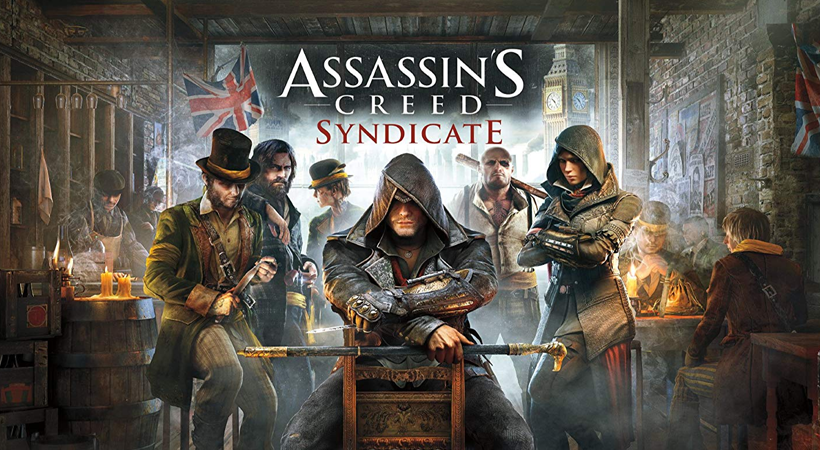
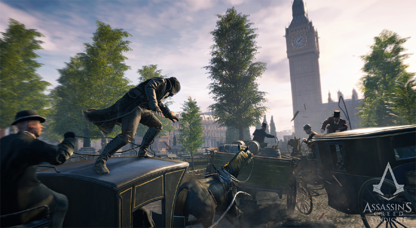
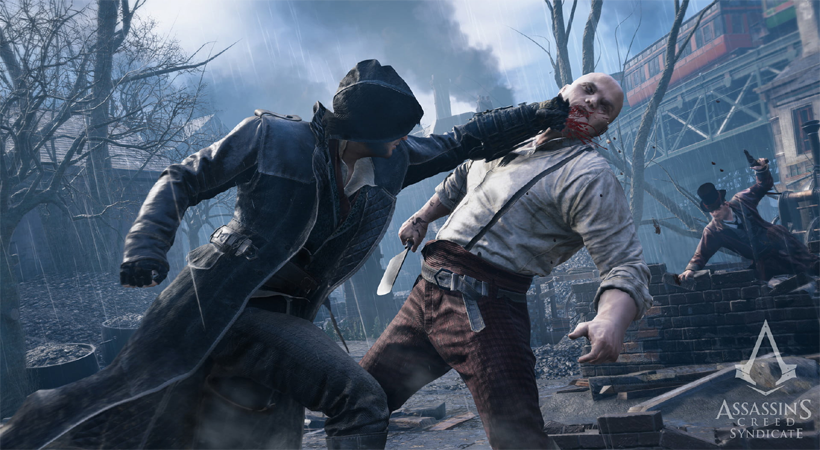

Assassins Creed Syndicate Free Download
Assassins Creed Syndicate Free Download PC Game setup in direct link for windows. Assassins Creed Syndicate is an Action Adventure game.
Assassins Creed Syndicate PC Game Overview
Assassins Creed Syndicate PC Game is set in the year 1868 and it is the tail end of Industrial Revolution. The Assassin Brotherhood is almost exterminated, there are twins named Jacob and Evie Frye. Both of them left Crawley to go London. There they find a city which is controlled by Templars, Church and Monarchy has eventually lost all its power. The twins are being raised as Assassins in order to follow the Creed. They are determined to take back the city from Templars. They are being aided by Charles Dickens and Charles Darwin.

Features of Assassins Creed Syndicate
i) The most famous stealth action game series.
ii) It has a very deep and intriguing storyline.
iii) There are many side missions which go with the flow.
iv) Very detailed and extra ordinarily built environment.
v) Two different playable characters.

System Requirements of Assassins Creed Syndicate
Before you start Assassins Creed Syndicate make sure your PC meets minimum system requirements.
i) Tested on Windows 7 64-Bit
ii) Operating System: Windows Vista/7/8/8.1/10
iii) CPU: Intel i5
iv) RAM: 6GB
v) Setup Size: 40GB
vi) Hard Disk Space: 50GB

Assassins Creed Syndicate Free Download
Click on the below button to start Assassins Creed Syndicate. It is full and complete game. Just download and start playing it. We have provided direct link full setup of the game.